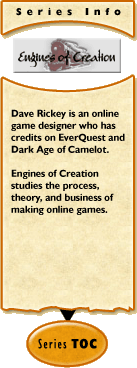

Engines of Creation #20:
The Rules
by Dave Rickey
2004-06-02
This guy goes to the doctor, and tells him: "Doc, I think I have a
serious allergy, I'm always wheezing and sometimes I break out in hives.
You've got to find out what's wrong with me."
So the doctor draws blood, orders a bunch of tests, and tells the guy to
come back after the results are in. A few days later, the guy comes back to
the doctor's office to hear the results. The doctor tells him; "You're in
great health, we only found one allergy, and it's so unusual it shouldn't be
any problem: You're allergic to elephant dung."
"Doc, that's awful. I work for a circus, I scoop up the elephant dung, I'm
around the stuff all the time."
"Well, you're extremely allergic to it, I think you should quit your job, do
something else."
"What, and give up show business?"
This was my sixth trip to E3, my first was the last one held in Atlanta in
'98 (I didn't go in 2000). The general rule is that your first E3 you're
blown away, the second you have fun, the third you're a little bored and by
the fourth you start to actively hate the experience. That was pretty much
how it went for me. After working the 2001 E3 as the overflow media contact
for Camelot, my knees felt like they were full of gravel, my throat felt
like it was lined with sandpaper, and if I never went back to LA, that was
fine with me. The next year I disliked the whole circus.
By much the same token, between 2000 and 2003, I didn't enjoy playing video
games. I couldn't turn off the urge to analyze them, I was too deeply
involved in judging the gameplay, art assets, and other attributes of the
games to enjoy simply playing them.
Both of those have changed recently. As I found myself explaining
repeatedly at E3, this last few months have been a "personal growth period",
after six years in which my life was defined by "work, eat, sleep, lather,
rinse, repeat", I took a few months off to attend to my personal life, and
reflect on things. Other than these columns (the quality of which has
suffered), I was basically out of contact since January. I've been taking
the time to consider the industry as a whole, and what my next step in my
career would be. Giving up "showbiz for geeks" was briefly considered, but
rejected pretty quickly. For a variety of reasons, I am a "true believer"
in the potential of these games, and I couldn't walk away from them any more
then the infamous elephantine sanitation engineer.
More than that, however, I found that I could enjoy playing games again.
Having turned off my analytical urge while I recovered a personal life, I
found it wasn't so hard to turn it on and off on cue as I needed to in order
to enjoy the process of playing the game, then analyze it later. And, for
the first time since 1999, I enjoyed going to E3, seeing new and upcoming
games, chatting with the developers, and schmoozing at parties. The only
one I'll mention here is Auto Assault; everyone I spoke to either hated it
or absolutely loved it, which will serve as my segue into the real focus of
this column: The rules of MMOG development, as far as I have been able to
figure them out:
Rule #1: Embrace Your Niche
There's been an ongoing debate in the industry over whether the "N" word was
the kiss of death, or the One True Way. I think that City of Heroes finally
tipped the scales on this question: the key to success for an online game is
to carefully define the niche you wish to serve, embrace it openly, and
serve it well. It is still a potential danger to over-refine your niche,
but in general, unlike single-player games where you want to create a game
that as many as possible will take off of the shelf and like just enough not
to go through the hassles of returning, in online games you want to appeal
to a solid base of long-term subscribers who will pay the monthly fees and
buy the expansions; in other words it is not enough for them to like the
game, they must love the game. With an overall market size
approaching 3 million subscriptions, and viable investment returns requiring
a game to only capture 3-4% of that, it's entirely reasonable to pursue a
concept that will turn off 80% of the market, if the remaining 20% has a
strong prospect of finding a game experience there they will like, and
cannot find anywhere else. The key will be to really deliver on the promise
implied by the choice of niche (which City of Heroes does, and Auto Assault
appears to be poised to do).
Rule #2: The Market isthe Hardcore
This ties in with Rule #1, coming from the other direction. Once the market
for single player games was driven by the "Hardcore Gamer", people who
bought a dozen games a year and routinely upgraded their computers several
times a year to play the latest and greatest. These players had ever rising
expectations of quality in all areas, and these expectations drove the costs
of developing games higher all through the 90's. In the late 90's, the
economics of this broke down: The few tens to hundreds of thousands that
would buy games of certain genres because they were deeper, more complex,
and more realistic, were no longer sufficient for it to be profitable to make
the games they demanded. These players are our core market, they will pay
for monthly subscriptions to get what they want and they aren't going to get
it from the single-player developers anymore. Our market will grow by
converting casual players into hardcore gamers, not through reaching out to
them by "dumbing down" our games.
Rule #3: No Honeymoons
Technically flawed systems and severe customer service inadequacies may be
hallmarks of MMOG launches, but the market isn't willing to tolerate them
anymore. Several games have started off with strong sales, but sufferred
technical issues that have caused conversion rates to drop through the
floor, and the games have never recovered. UO and EQ may have had problems
as great or greater, but they had the advantage of a lack of alternatives,
no game will ever have that luxury again.
Rule #4: Don't Forget the Game
It's easy to get overwhelmed with the sheer scale and complexities of the
process of MMOG development, and forget to put enough attention on the fun
parts. No matter what your ambitions, or the subtleties of your endgame,
you still have only minutes, at most an hour or so, to lock in their
interest in the game. The newbie experience must be smooth, polished, and
compelling.
Rule #5: Mindshare, Mindshare, Mindshare
It is increasingly clear that games have only a few months to establish
their subscriber base, which will then remain fairly stable for years to
come. This means that "sleeper" hits are unlikely if not impossible in this
business, and experience would indicate that the most effective tool in the
battle for mindshare is an evangelical developer, and in the future we're
going to have some close variant on a "Star" system, where the name and
reputation of high-profile designers is at a premium. Major licenses
might be adequate to the task of establishing initial mindshare,
although it's doubtful they will do anything more for a title (it's
questionable which did more for SWG, the Star Wars liscense or Raph Koster's
recognition, but it's clear that the Star Wars name didn't pay off enough to
be worth it).
Rule #6: Everything is Simple
Von Clausewitz observed that "In war, everything is very simple, but the
simplest thing can be very difficult." This is also true in in MMOG's: each
of the steps required to go from concept to launch is very easily understood
and simple to perform, but the sheer number of steps and the inadequacy of
our understanding of their relative importance makes it extremely easy to
miss a step, or to approach it in the wrong manner. As with rule #2, the
tolerance of the market for these mis-steps is steadily declining, and the
importance of experience in and study of the process will grow.
Rule #7: You'll Get By With Help From Your Friends of Friends of
Friends
No matter how much your invest in the quality of your graphics, the depth of
your content, or the promotion of your game, in the end what keeps the
players in the game is each other. In many cases, they have been playing
with the same friends for years, having migrated together across several
games. There is no acceptable reason to tell a player "No, you may not hang
out with your friends." Anti-powergaming measures that stratify the players
and pull apart groups of friends by not allowing them to group together are
bad, and no justification for them stands up in the long term.
Rule #8: Players are Your Greatest Resource
The average player puts 20 hours a week into the game. This means that for
every 10,000 players, the equivalent of 100 man-years of time is expended
every week, quickly turning into man-millenia per week for the
successful game. Even at extremely low efficiencies, converting this effort
into entertainment value rapidly exceeds the input of your paid staff by
orders of magnitude. Beyond the first few hours of play, it is this hidden
resource that is really holding your players in your game. No matter how
hard you worked to create the world, the fact is your efforts are just
background and context for the real attraction. Get over yourself and
figure out how to make this work for you.
Rule #9: Guard Your World
The power represented by Rule #8 can also work against you. You have an
implicit duty to protect your players from harassment, cheating, and
exploitation, and if you fail to fulfill this duty you will lose revenue at
a higher rate than the costs of enforcement. Players will look for every
advantage they can get, and some dozens to hundreds of them are going to be
skilled programmers. They will look for every bug and logical error in your
game, use those ruthlessly, and then step beyond those into messing around
with your client and packet stream. Do not trust obfuscation techniques or
encryption; assume that any data that reaches the client is going to be
eventually discovered and exploited. Safeguarding the integrity of your
game world is an ongoing process, from the initial design forward.
Rule #10: Perception is Reality
Whether it is the comparative balance of one character development, the
integrity and quality of your customer service program, or anything else,
the way your players perceive things is more important than how they
actually are. In some cases it may be possible to educate the players...but
only if they perceive your statements as coming from a truthful source.
It's a terrible commentary on the state of the games industry as whole that
after 6 years I qualify as a "grizzled veteran", able to dispense such
advice with a straight face. But that's the subject of a future column.
For what it is worth, these are the most fundamental lessons and observatons
of my career, offered freely and worth what you're paying for them.
[ <— #19: Fun-damentals | #21: Golden Ghetto —> ]
|
Recent Discussions on Engines of Creation:
|
|
|